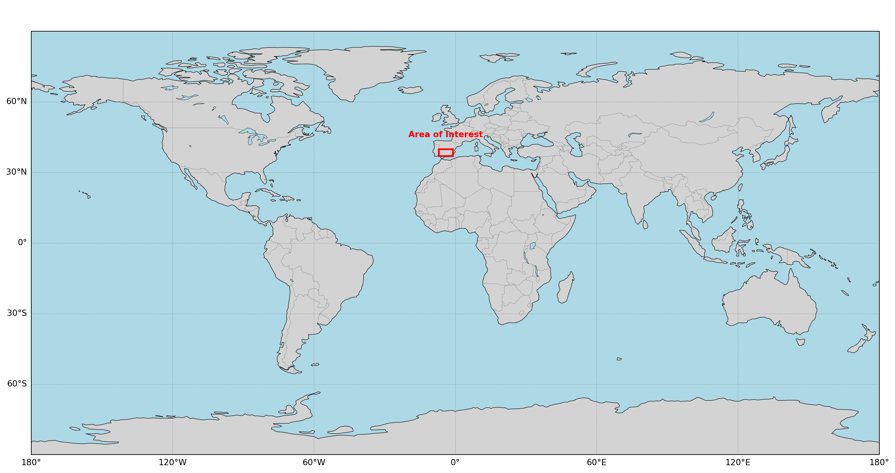
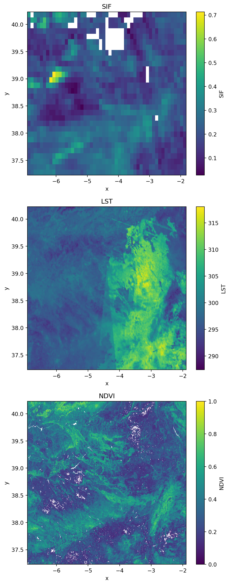
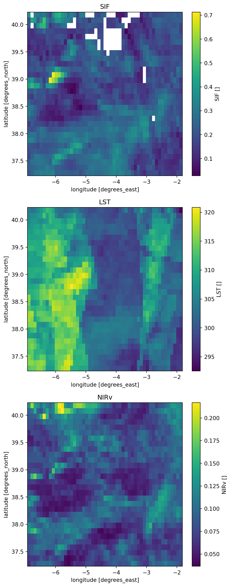
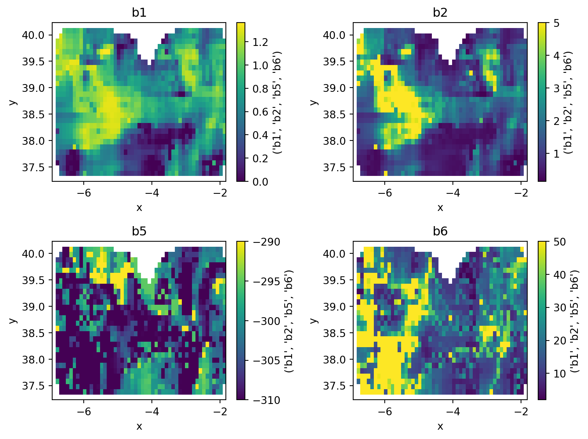
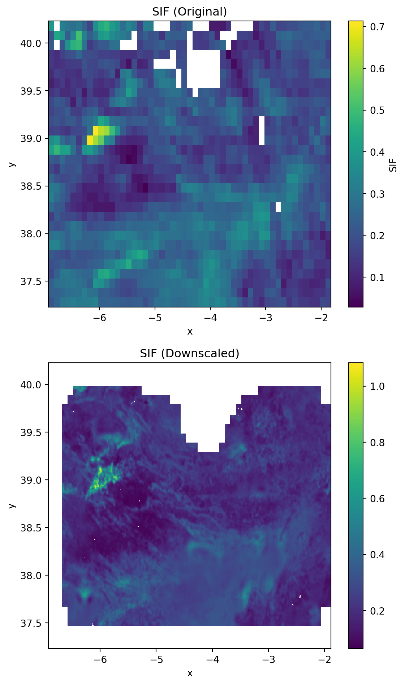
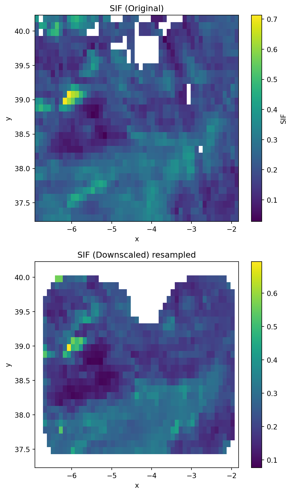
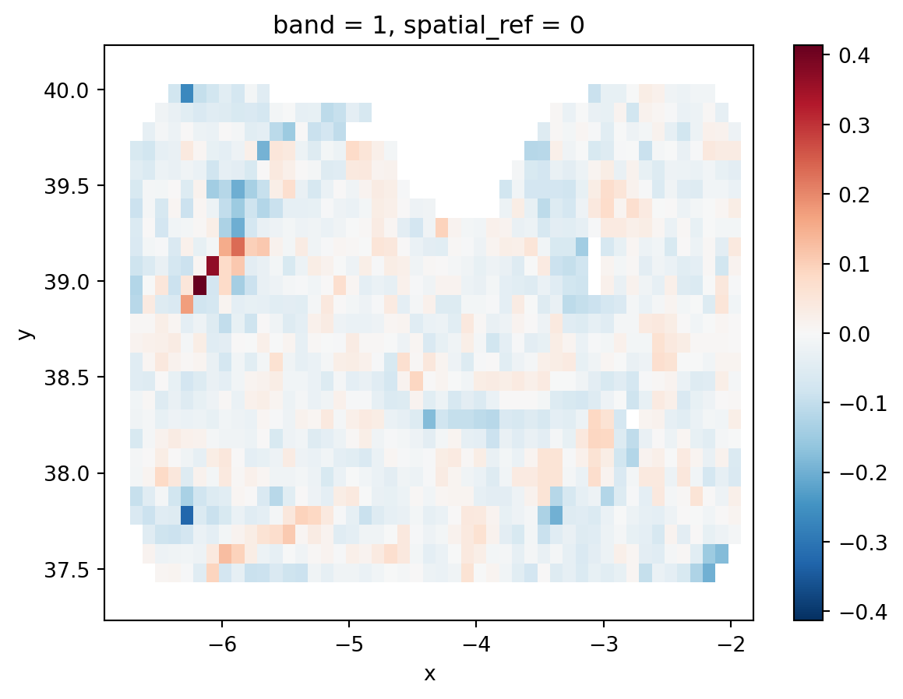

import openeo
import rioxarray as rio
"""
Currently there is an issue with openEO back-end that doesnt allow us to upsample datacubes (For more details see [here](https://forum.dataspace.copernicus.eu/t/how-to-spatial-upsampling-when-using-resample-cube-spatial/4358/6)). For this reason we will need some other libraries to process the parameters cube locally, perform a spatial upsample, create a stac catalog and publish the file and catalog on github.
This is needed to create a STAC item for the upsampled parameters:
"""
import pystac
from pystac.extensions.projection import ProjectionExtension
from pystac.extensions.eo import EOExtension
from datetime import datetime
from shapely.geometry import box, mapping
import json
import subprocess
# For data visualization
import xarray as xr
import matplotlib.pyplot as plt
import xesmf as xeSIF Downscaling using OpenEO and the Copernicus Data Space Ecosystem (CDSE)
Introduction
In the following example we will Downscaled (Increase the spatial resolution) of Sun Induced Fluorescence product derived from Sentinel-5p TROPOMI sensor. A full workflow diagram is presented here: XXXXX
Libraries
We will need the following libraries to run dowscaling processor
Area of Interest and Time Period
Before going into the details of the datasets we need to define an area of interest and time period of our analysis. For this example we will focus in the north part of Germany in the period between 2018-06-20 and 2018-06-30.
spatial_extent_prototype = {
"west": -6.921387,
"east": -1.889648,
"south": 37.230328,
"north": 40.229218,
}
temporal_extent_prototype = ["2023-06-23", "2023-06-30"]
Connecting to CDSE using openEO
To connect to the openEO insfrastructure in the CDSE we need to create a connection:
connection = openeo.connect(
"https://openeofed.dataspace.copernicus.eu/"
).authenticate_oidc()Authenticated using refresh token.This will open a tab in the web-browser where the user needs to authenticate using the CDSE credentials. For more details on openEO in CDSE please see: https://dataspace.copernicus.eu/analyse/openeo
Then we can see the data collections that are available:
connection.list_collections()Variables
For this tutorial we will use the following datasets/variables:
Target:
| Variable name | Collection | Band Name | Spatial resolution |
|---|---|---|---|
| Sun-Induced Flourescence | Dong Li SIF | SIF |
5 km |
Currently there are two SIF gridded products derived from Sentinel-5p that are availables:
S5P-PAL SIF. This product is generated by the Sentinel-5P Product Algorithm Laboratory (S5P-PAL) and contains modified Copernicus Sentinel data processed by S[&]T. Unfortunately, the current (at least at: 2025-12-01) STAC dissemination only include plain netcdf files and not cloud optimized data format. Currently the Atmosphere Virtual Lab project is working in provided zarr datacubes for the L3 products, including SIF.
Dong LI SIF. This product uses an artificial neural network to retrieve SIF from Sentinel-5p observations. Thanks to Dong Li for provinding us with a gridded example of the product and the stac item necessary to ingest the product in the openEO-CDSE infrastructure. This files can be found in the data directory of the repository.
Predictors:
| Variable name | Collection | Band Name | Spatial resolution |
|---|---|---|---|
| Land Surface Temperature | SENTINEL3_SLSTR_L2_LST |
LST |
1 km |
| Terrestrial Chlorophyll Index | SENTINEL3_OLCI_L2_LAND |
OTCI |
300 m |
| Integrated Water Vapour | SENTINEL3_OLCI_L2_LAND |
IWV |
300 m |
Creating openEO datacubes for the variables
# Testing SIF - Dong Li
cube_SIF_original_median = connection.load_stac(
"https://raw.githubusercontent.com/dpabon/SIF_downscaling_CDSE/refs/heads/main/data/SIF_20180629.json",
bands=["SIF"],
spatial_extent=spatial_extent_prototype,
temporal_extent=temporal_extent_prototype,
)
cube_LST = connection.load_collection(
"SENTINEL3_SLSTR_L2_LST",
spatial_extent=spatial_extent_prototype,
temporal_extent=temporal_extent_prototype,
bands=["LST"],
)
cube_LST_qc = connection.load_collection(
"SENTINEL3_SLSTR_L2_LST",
spatial_extent=spatial_extent_prototype,
temporal_extent=temporal_extent_prototype,
bands=["confidence_in"],
)
red = connection.load_collection(
"SENTINEL3_OLCI_L2_LAND",
spatial_extent=spatial_extent_prototype,
temporal_extent=temporal_extent_prototype,
bands=["RC681"],
)
nir = connection.load_collection(
"SENTINEL3_OLCI_L2_LAND",
spatial_extent=spatial_extent_prototype,
temporal_extent=temporal_extent_prototype,
bands=["RC865"],
)
cube_NIRv = ((nir - red) / (nir + red)) * nir
cube_NIRv = cube_NIRv.rename_labels(dimension="bands", target=["NIRv"])
cube_OLCI_qc = connection.load_collection(
"SENTINEL3_OLCI_L2_LAND",
spatial_extent=spatial_extent_prototype,
temporal_extent=temporal_extent_prototype,
bands=["LQSF"],
)Masking clouds
mask = cube_LST_qc > 5000
cube_LST_masked = cube_LST.mask(mask)mask_olci = cube_OLCI_qc > 10000
cube_NIRv_masked = cube_NIRv.mask(mask_olci)If we call one of the cubes we can see the process graph that is created by openEO:
cube_LST_maskedReducing the time dimension
For this analysis we will compute a composite of the area of interest using all the observations during the time period for all the variables except SIF that is already one time step observation.
# cube_SIF_original_median = cube_SIF_original_median.reduce_temporal(reducer="median")cube_LST_median = cube_LST_masked.reduce_temporal(reducer="median")
cube_NIRv_median = cube_NIRv_masked.reduce_temporal(reducer="median")cube_LST_medianInspecting the variables
Then we will inspect the products, for that we need to execute the processors for each cube, save it locally, open and plot.
# cube_SIF_original_median.execute_batch(outputfile="data/cube_SIF_median.tif")
# cube_LST_median.execute_batch(outputfile="data/cube_LST_median.tif")
# cube_NIRv_median.execute_batch(outputfile="data/cube_NIRv_median.tif")cube_sif_local = rio.open_rasterio(
filename="data/cube_SIF_median.tif", mask_and_scale=True
)
cube_lst_local = rio.open_rasterio(filename="data/cube_LST_median.tif")
cube_nirv_local = rio.open_rasterio(filename="data/cube_NIRv_median.tif")fig, axs = plt.subplots(nrows=3, figsize=(6, 15))
cube_sif_local.plot(ax=axs[0])
axs[0].set_title("SIF")
cube_lst_local.plot(ax=axs[1])
axs[1].set_title("LST")
cube_nirv_local.plot(ax=axs[2])
axs[2].set_title("NIRv")
plt.tight_layout()
Important
The LST composite looks heavily influenced by the orbits. For sure it can be better…for example Terrascope Sentinel-3 Level 3 Land Surface Temperature daily synthesis product
OR maybe Sentinel-3 SYN SLSTR bands…
Spatial resampling to match the SIF resolution product
cube_LST_median_low = cube_LST_median.resample_cube_spatial(
target=cube_SIF_original_median, method="med"
)
cube_NIRv_median_low = cube_NIRv_median.resample_cube_spatial(
target=cube_SIF_original_median, method="med"
)Merging all the cubes at low resolution (SIF original resolution)
dataset_SIF_low = cube_SIF_original_median.merge_cubes(cube_LST_median_low)
dataset_SIF_low = dataset_SIF_low.merge_cubes(cube_NIRv_median_low)Adding two dummy variables to the datacube to match the number of oputput parameters of the optimization function.
dataset_SIF_low = dataset_SIF_low.merge_cubes(
other=cube_SIF_original_median.rename_labels(dimension="bands", target=["dummy_1"])
)
dataset_SIF_low = dataset_SIF_low.merge_cubes(
other=cube_SIF_original_median.rename_labels(dimension="bands", target=["dummy_2"])
)# dataset_SIF_low.execute_batch(outputfile="data/sif_predictors_cube_low.nc")Let’s check the cube after resampling
dataset_sif_low_local = xr.open_dataset("data/sif_predictors_cube_low.nc")
print(dataset_sif_low_local)<xarray.Dataset> Size: 31kB
Dimensions: (t: 1, x: 51, y: 30)
Coordinates:
* t (t) datetime64[ns] 8B 2023-06-29
* x (x) float64 408B -6.871 -6.771 -6.671 ... -2.071 -1.971 -1.871
* y (y) float64 240B 40.18 40.08 39.98 39.88 ... 37.48 37.38 37.28
Data variables:
crs |S1 1B ...
SIF (t, y, x) float32 6kB ...
LST (t, y, x) float32 6kB ...
NIRv (t, y, x) float32 6kB ...
dummy_1 (t, y, x) float32 6kB ...
dummy_2 (t, y, x) float32 6kB ...
Attributes:
Conventions: CF-1.9
institution: Copernicus Data Space Ecosystem openEO API - 0.70.0a5.dev20...
description:
title: fig, axs = plt.subplots(nrows=3, figsize=(6, 15))
dataset_sif_low_local["SIF"].plot(ax=axs[0])
axs[0].set_title("SIF")
dataset_sif_low_local["LST"].plot(ax=axs[1])
axs[1].set_title("LST")
dataset_sif_low_local["NIRv"].plot(ax=axs[2])
axs[2].set_title("NIRv")
plt.tight_layout()
SIF parameter optimization at low spatial resolution
To predict SIF we use the following formulation:
Definition 1 \[SIF = f(V) \cdot f(T)\]
where \(f(V)\) represents the vegetation module and \(V\) is a vegation index: \[f(V) = b_2 \cdot V^{b_1}\]
\(f(T)\) represents the temperature module where \(T\) is a variable that represent temperature stress (e.g. air temperature at 2 meters, or land surface temperature)
\[ f(T) = e^{-\frac{(T + b_5)^2}{2b_6^2}} \]
Given the previous formulation we optimize the function using L-BFGS-B and a spatial moving window with 40 observations. The optimization function is defined in udf_parameters_optim_low_res.py.
First we need to define the boundaries and start values for \(b1\), \(b2\), \(b5\) \(b6\) parameters:
# the order for each variable follows: b1,b2,b3,b4,b5,b6
param_min = [0, 0.1, -310, 1]
param_ini = [1, 2, -295, 10]
param_max = [1.5, 5, -290, 50]To apply the optimization function in the data cube we define an openEO User Define Function using:
my_udf = openeo.UDF.from_file(
"src/udf/udf_parameters_optim_low_res.py",
context={
"param_ini": param_ini,
"param_min": param_min,
"param_max": param_max,
"min_obs": 25,
"window_size_lat": 6,
"window_size_lon": 7,
},
)Notice that the size of the moving window is set using window_size_lat and window_size_lon.
Then we can apply our function to the data cube using:
parameters_cube_low = dataset_SIF_low.apply_neighborhood(
process=my_udf,
size=[
{"dimension": "x", "value": 512, "unit": "px"},
{"dimension": "y", "value": 512, "unit": "px"},
],
overlap=[
{"dimension": "x", "value": 0, "unit": "px"},
{"dimension": "y", "value": 0, "unit": "px"},
],
)
# changing the name of the ouput
output_bands = ["b1", "b2", "b5", "b6"]
parameters_cube_low_rename = parameters_cube_low.rename_labels("bands", output_bands)and see the process graph:
parameters_cube_low_renameNow we will download the cube the optimized parameters to have a look and spatially upsample to match the Sentinel-3 cube at high resolution.
"""
parameters_cube_low_rename.execute_batch(outputfile="data/results_parameters_optim_low_resolution.tif")
"""Checking parameter optimization results
parameters_cube_local = rio.open_rasterio(
"data/results_parameters_optim_low_resolution.tif"
)
print(parameters_cube_local)<xarray.DataArray (band: 4, y: 30, x: 51)> Size: 49kB
[6120 values with dtype=float64]
Coordinates:
* band (band) int64 32B 1 2 3 4
* x (x) float64 408B -6.871 -6.771 -6.671 ... -2.071 -1.971 -1.871
* y (y) float64 240B 40.18 40.08 39.98 39.88 ... 37.48 37.38 37.28
spatial_ref int64 8B 0
Attributes:
institution: Copernicus Data Space Ecosystem openEO API - 0.70.0...
PROCESSING_SOFTWARE: 0.70.0a5
AREA_OR_POINT: Area
_FillValue: nan
scale_factor: 1.0
add_offset: 0.0
long_name: ('b1', 'b2', 'b5', 'b6')Warning 1: TIFFReadDirectory:Sum of Photometric type-related color channels and ExtraSamples doesn't match SamplesPerPixel. Defining non-color channels as ExtraSamples.# plt.clf()
fig, axs = plt.subplots(nrows=2, ncols=2, figsize=(8, 6))
axs = axs.flatten()
counter = 0
for i in [1, 2, 5, 6]:
parameters_cube_local.isel(band=counter).plot(ax=axs[counter])
axs[counter].set_title(f"b{i}")
counter += 1
plt.tight_layout()
….
Upsampling the parameters cube
Note
Until openEO team solve the upsampling issue. For details see CDSE discusion forum We need to make a workaround to upsample the parameters cube.
This is a temporary solution
Code
parameters_low = rio.open_rasterio("data/results_parameters_optim_low_resolution.tif")
parameters_low
parameters_low = parameters_low.rename(
new_name_or_name_dict={"x": "longitude", "y": "latitude"}
)
# LST high resolution local
lst_high = rio.open_rasterio("data/cube_LST_median.tif")
lst_high = lst_high.rename(new_name_or_name_dict={"x": "longitude", "y": "latitude"})
regridder = xe.Regridder(
parameters_low, lst_high, method="patch", extrap_method="nearest_s2d"
)
parameters_high = regridder(parameters_low)
parameters_high = parameters_high.rename(
new_name_or_name_dict={"longitude": "x", "latitude": "y"}
)
# parameters_high = parameters_low.rio.reproject_match(lst_high)
# Saving the resample raster
parameters_high.rio.to_raster("data/results_paramaters_high_resolution.tif")
output_path = "https://github.com/dpabon/SIF_downscaling_CDSE/raw/refs/heads/main/data/results_paramaters_high_resolution.tif"
# Get metadata from the raster
bbox = list(parameters_high.rio.bounds()) # [minx, miny, maxx, maxy]
epsg = "4326"
shape = [parameters_high.rio.height, parameters_high.rio.width]
# Create geometry from bbox
geom = mapping(box(*bbox))
# Create the STAC item
item = pystac.Item(
id="results_parameters_high_resolution",
geometry=geom,
bbox=bbox,
datetime=datetime.strptime(temporal_extent_prototype[0], "%Y-%m-%d"),
properties={},
)
# Add projection extension
proj_ext = ProjectionExtension.ext(item, add_if_missing=True)
proj_ext.epsg = epsg
proj_ext.shape = shape
proj_ext.bbox = bbox
# Add EO extension
EOExtension.ext(item, add_if_missing=True)
# Add the asset
item.add_asset(
key="parameters",
asset=pystac.Asset(
href=output_path, # or use an absolute path / URL
title="Optimized Parameters High Resolution",
media_type="image/tiff; application=geotiff",
extra_fields={"eo:bands": [{"name": f"b{i}"} for i in [1, 2, 5, 6]]},
),
)
# Save as JSON
with open("data/results_parameters_high_resolution.json", "w") as f:
json.dump(item.to_dict(), f, indent=2)
print(item.to_dict())
# pushing changes to the remote repo to access from openEO again
git_commit = ["git", "commit", "-m", '"Upsampling of parameters updated"', "-a"]
subprocess.run(git_commit)
git_push = ["git", "push"]
subprocess.run(git_push)
# plotting the resampled parameters
fig, axs = plt.subplots(nrows=2, ncols=2, figsize=(8, 8))
axs = axs.flatten()
for i in range(4):
parameters_high.sel(band=i + 1).plot(ax=axs[i])
axs[i].set_title(f"b{i + 1}")
plt.tight_layout()Once the upsampling functionality is part of openEO one should be able to do:
"""
parameters_cube_high = parameters_cube_low_rename.resample_cube_spatial(
target=cube_LST_median
)
"""Meanwhile we can use load_stac to load again the parameters cube in openEO.
parameters_cube_high = connection.load_stac(
"https://raw.githubusercontent.com/dpabon/SIF_downscaling_CDSE/refs/heads/main/data/results_parameters_high_resolution.json",
spatial_extent=spatial_extent_prototype,
temporal_extent=temporal_extent_prototype,
bands=["b1", "b2", "b5", "b6"],
)
parameters_cube_high
# parameters_cube_high_median = parameters_cube_high.reduce_temporal("median")
parameters_cube_high_median = parameters_cube_highResampling OLCI products at 1 km
Originally the OLCI products are 300 meters resolution, as Sentinel-3 LST product is at 1 km (Table 1) we need to resample the NIRv cube:
cube_NIRv_median_1 = cube_NIRv_median.resample_cube_spatial(
target=cube_LST_median, method="med"
)Then, we can concatenate all the variables in a single cube for prediction:
cube_to_upscale = parameters_cube_high_median.merge_cubes(cube_LST_median)
cube_to_upscale = cube_to_upscale.merge_cubes(cube_NIRv_median_1)# cube_to_upscale.execute_batch(outputfile="data/sif_predictors_cube_high.nc")Checking that everything is in order with the code to upscale
cube_to_upscale_local = xr.open_dataset("data/sif_predictors_cube_high.nc")
print(cube_to_upscale_local)<xarray.Dataset> Size: 9MB
Dimensions: (t: 1, x: 564, y: 336)
Coordinates:
* t (t) datetime64[ns] 8B 2023-06-23
* x (x) float64 5kB -6.917 -6.908 -6.899 -6.89 ... -1.908 -1.899 -1.89
* y (y) float64 3kB 40.22 40.22 40.21 40.2 ... 37.26 37.25 37.24 37.23
Data variables:
crs |S1 1B ...
b1 (t, y, x) float64 2MB ...
b2 (t, y, x) float64 2MB ...
b5 (t, y, x) float64 2MB ...
b6 (t, y, x) float64 2MB ...
LST (t, y, x) float64 2MB ...
NIRv (t, y, x) float64 2MB ...
Attributes:
Conventions: CF-1.9
institution: Copernicus Data Space Ecosystem openEO API - 0.70.0a5.dev20...
description:
title: Downscaling SIF
To downscale SIF we will use Definition 1. The code implementation of Definition 1 is available at udf_sif_downscaling.py. Then we can call the udf using:
udf_sif_prediction = openeo.UDF.from_file(
"src/udf/udf_sif_downscaling.py",
context={"window_size_lat": 3, "window_size_lon": 3},
)
sif_downscaled = cube_to_upscale.apply_neighborhood(
udf_sif_prediction,
size=[
{"dimension": "x", "value": 512, "unit": "px"},
{"dimension": "y", "value": 512, "unit": "px"},
],
overlap=[
{"dimension": "x", "value": 0, "unit": "px"},
{"dimension": "y", "value": 0, "unit": "px"},
],
)It is not possible to reduce the number of bands using apply_neighborhood then we need to just select the first band:
# removing bands that are not needed it
sif_downscaled_renamed = sif_downscaled.rename_labels(
dimension="bands", source=["b1"], target=["SIF"]
)
sif_downscaled_renamed = sif_downscaled_renamed.band("SIF")Now we can run everthing and save the results
"""
sif_downscaled_renamed.execute_batch(
outputfile="data/openeo_sif_downscaled.tif",
title="SIF_downscaling",
description="Predicting SIF at high spatial resolution"
)
"""'\nsif_downscaled_renamed.execute_batch(\n outputfile="data/openeo_sif_downscaled.tif",\n title="SIF_downscaling",\n description="Predicting SIF at high spatial resolution"\n)\n'Comparing SIF products
Comparing the original SIF product at 5 km with the Downscaled SIF at 1 km.
sif_downscaled_local = rio.open_rasterio("data/openeo_sif_downscaled.tif")
print(sif_downscaled_local)<xarray.DataArray (band: 1, y: 336, x: 564)> Size: 758kB
[189504 values with dtype=float32]
Coordinates:
* band (band) int64 8B 1
* x (x) float64 5kB -6.917 -6.908 -6.899 ... -1.908 -1.899 -1.89
* y (y) float64 3kB 40.22 40.22 40.21 40.2 ... 37.25 37.24 37.23
spatial_ref int64 8B 0
Attributes:
institution: Copernicus Data Space Ecosystem openEO API - 0.70.0...
PROCESSING_SOFTWARE: 0.70.0a5
AREA_OR_POINT: Area
_FillValue: nan
scale_factor: 1.0
add_offset: 0.0fig, axs = plt.subplots(nrows=2, figsize=(6, 10))
cube_sif_local.plot(ax=axs[0])
axs[0].set_title("SIF (Original)")
sif_downscaled_local.plot(ax=axs[1])
axs[1].set_title("SIF (Downscaled)")
plt.tight_layout()
To validate the downscaling results let’s resample the SIF downscaled and compare it with the original product at 5 km.
sif_downscaled_resampled = sif_downscaled_renamed.resample_cube_spatial(
target=cube_SIF_original_median,
method="med",
)# sif_downscaled_resampled.execute_batch("data/sif_downscaled_resampled.tif")sif_downscaled_resampled_local = rio.open_rasterio("data/sif_downscaled_resampled.tif")
sif_downscaled_resampled_local<xarray.DataArray (band: 1, y: 30, x: 51)> Size: 6kB
[1530 values with dtype=float32]
Coordinates:
* band (band) int64 8B 1
* x (x) float64 408B -6.871 -6.771 -6.671 ... -2.071 -1.971 -1.871
* y (y) float64 240B 40.18 40.08 39.98 39.88 ... 37.48 37.38 37.28
spatial_ref int64 8B 0
Attributes:
institution: Copernicus Data Space Ecosystem openEO API - 0.70.0...
PROCESSING_SOFTWARE: 0.70.0a5
AREA_OR_POINT: Area
_FillValue: nan
scale_factor: 1.0
add_offset: 0.0fig, axs = plt.subplots(nrows=2, figsize=(6, 10))
cube_sif_local.plot(ax=axs[0])
axs[0].set_title("SIF (Original)")
sif_downscaled_resampled_local.plot(ax=axs[1])
axs[1].set_title("SIF (Downscaled) resampled")
plt.tight_layout()
Now let’s do \(originalSIF - upscaledSIF\)
plt.clf()
differences = cube_sif_local - sif_downscaled_resampled_local
differences.plot()